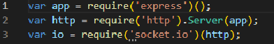
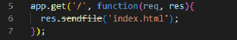
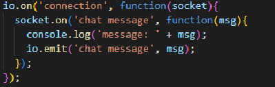

daha sonra terminale npm i express socket.io yazarak bu paketlerimizin kurulumunu yapıyoruz
Aşağıda gördüğünüz ilk 3 satır kullanacağımız http, socket, ve express kütüphaneleridir.

Kütüphanelerimizi kurduktan sonra ise chati kullanabilmek için html kullanarak basit bir chat şablonu oluşturmamız
ve onu bu syfamıza çağırmamız gerek aşağıda gördüğünüz kodla klasörün içindeki html dizinini sayfaya çağırıyoruz.

Aşağıda verdiğimiz kod ileyse server çalışırken konsol üzerinden bize, yapılan giriş ve çıkışlar mesaj olarak iletiliyor.

Son olaraksa aşağıdaki komutla localhost:3000'i dinleterek serverimizi tamamen hazır hale getiriyoruz.